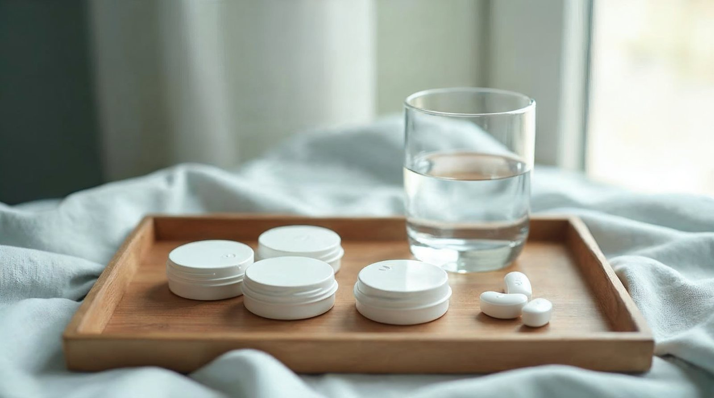
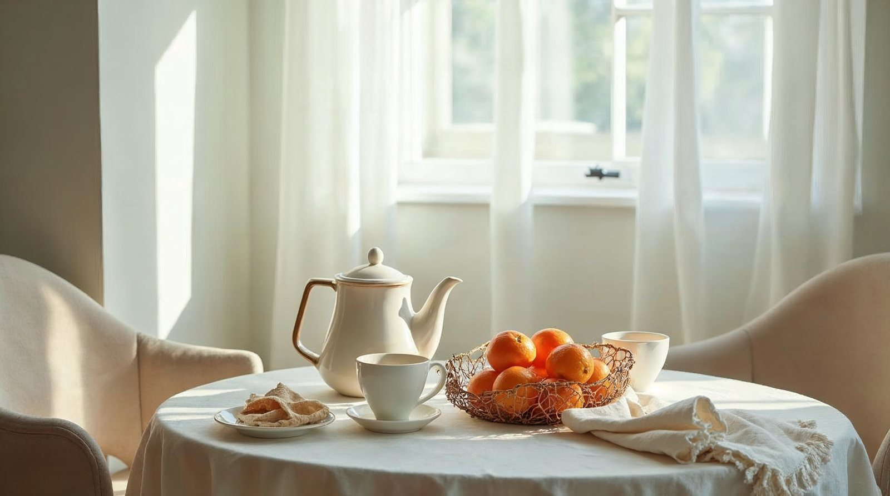
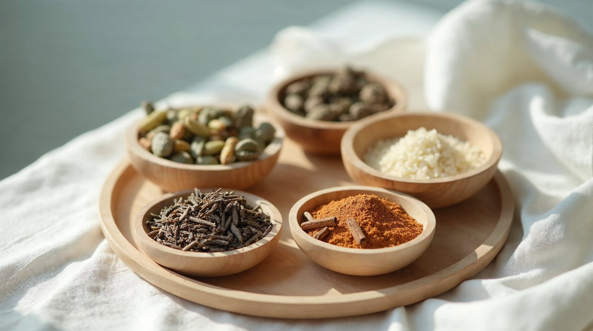
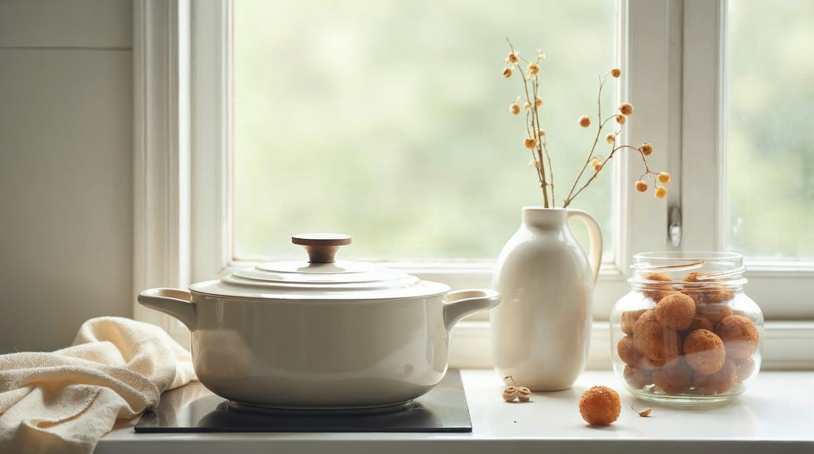
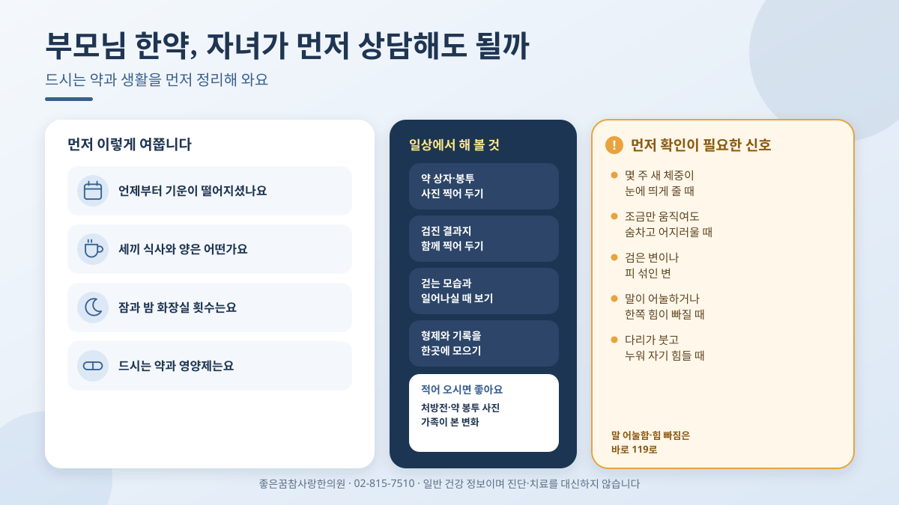

이종호 한의사 감수좋은꿈참사랑한의원 대표원장 (한의사 면허번호 19769)발행 2026-11-27 · 수정 2026-11-27
이 글의 차례
연말에 오랜만에 부모님 댁에 들렀다가 부쩍 마르셨거나, 낮에 자주 누워 계시고, 밥을 반 공기도 못 드시는 모습을 보면 '한약이라도 지어 드려야 하나' 하는 마음이 들죠. 그 마음이 얼마나 애틋한지 저도 잘 알아요.
먼저 답부터 드릴게요. 자녀분이 먼저 전화로 문의하시거나 혼자 오셔서 부모님 상황을 이야기하고 궁금한 걸 여쭙는 건 얼마든지 괜찮아요. 다만 '상담'과 '처방'은 다른 얘기예요.
한약은 같은 '기운 없음'이라도 이유에 따라 처방이 달라져요. 부모님 연세엔 드시는 약과 간·콩팥 상태, 소화력까지 확인할 게 많고요. 그래서 좋은꿈참사랑한의원에서는 드실 분을 직접 뵙고 맥을 짚은 뒤 처방을 정해요.
그래서 저는 먼저 부모님이 드시는 약 목록과 최근 검진 결과, 요즘 달라진 식사·잠·대소변을 정리해 두시고, 부모님과 함께 오실 수 있는 날을 잡으시라고 권해요.
또 기운이 없는 원인이 빈혈이나 갑상선, 혈당, 마음의 가라앉음, 드시는 약의 영향일 수도 있어요. 몇 주 사이 체중이 눈에 띄게 줄었거나 숨이 차고 어지러워하신다면 내과 진료를 먼저 받으시는 게 좋아요.
왜 자녀가 전해 준 이야기만으로는 한약을 정하기 어려울까요
- '기운이 없다'는 말 뒤에는 잠 부족, 입맛 저하, 소화력 감소, 근육량 감소, 빈혈, 갑상선 기능 변화, 혈당 문제, 마음의 가라앉음 등 여러 이유가 숨어 있을 수 있습니다. 이유가 다르면 살펴볼 방향과 처방도 달라집니다.
- 연세가 드시면 혈압약, 당뇨약, 고지혈증약, 항응고제, 진통제처럼 여러 약을 함께 드시는 경우가 많습니다. 한약과 함께 드셔도 되는지, 시간 간격은 어떻게 둘지 약 이름과 용량을 직접 확인해야 합니다.
- 간이나 콩팥 기능, 소화력은 사람마다 차이가 커서, 같은 약재라도 어떤 분은 편하게 드시고 어떤 분은 속이 더부룩하거나 변이 묽어질 수 있습니다.
- 자녀가 보는 모습과 부모님이 느끼시는 불편이 다를 때가 많습니다. 자녀는 '기운이 없다'고 보지만 부모님은 '무릎이 아파서 안 움직인다', '밤에 화장실 때문에 잠을 못 잔다'고 말씀하시기도 합니다.
- 맥과 혀, 배의 상태, 얼굴빛과 목소리, 걸음걸이는 직접 뵈어야 알 수 있습니다. 진료실에서는 이야기와 함께 이런 모습을 모아 지금 몸 상태를 판단합니다.
- 연말에는 부모님도 김장, 집안 행사, 추위로 인한 활동 감소가 겹쳐 일시적으로 지치신 경우가 있어, 잠과 식사를 먼저 챙겨 드리며 달라지는지 지켜볼 여지도 있습니다.
- 부모님은 자녀에게 걱정을 끼치지 않으려고 불편을 줄여 말씀하시는 경우가 많습니다. 진료실에서 직접 여쭈면 자녀도 처음 듣는 이야기가 나오기도 해, 함께 오시는 것 자체가 부모님 하루를 이해하는 기회가 됩니다.
- 한의학에서는 연세가 들며 기혈이 줄고 비위가 약해져 먹는 양이 줄고 쉽게 지치는 모습을 흔히 보지만, 그 안에서도 찬 쪽인지 열이 있는 쪽인지, 마른 쪽인지 붓는 쪽인지에 따라 다르게 봅니다.
먼저 이렇게 여쭙니다
- 언제부터 기운이 떨어지셨는지, 계기가 될 만한 일(감기, 넘어짐, 입원, 김장, 집안일)이 있었는지 여쭙니다.
- 하루 세끼를 드시는지, 한 끼 양이 어느 정도인지, 씹기와 삼키기에 불편이 없는지 여쭙니다.
- 잠드는 시각과 깨는 시각, 밤에 화장실 때문에 몇 번 깨시는지 여쭙니다.
- 대변은 며칠에 한 번, 어떤 모양으로 보시는지, 소변은 시원한지 여쭙니다.
- 드시는 약과 영양제, 건강식품을 모두 여쭙니다. 약 봉투나 처방전을 가져오시면 가장 정확합니다.
- 최근 건강검진이나 병원 혈액 검사에서 빈혈, 간·콩팥 수치, 혈당에 대해 들은 말이 있는지 여쭙니다.
- 예전에 한약을 드시고 속이 불편하거나 두드러기가 난 적이 있는지 여쭙니다.
- 요즘 마음이 울적하거나, 바깥에 나가기 싫어지셨는지도 부모님과 함께 온 가족께 조심스럽게 여쭙니다.

일상에서 먼저 해 볼 수 있는 것
부모님 댁에 들렀을 때 살펴 둘 것
- 냉장고와 식탁을 보며 요즘 무엇을 얼마나 드시는지 봅니다. 반찬이 그대로 남아 있거나, 끼니를 빵과 믹스커피로 때우시는지 확인합니다.
- 약 상자와 약 봉투를 함께 꺼내 지금 드시는 약을 휴대폰으로 찍어 둡니다. 여러 병원에서 받은 약이 섞여 있다면 병원별로 나눠 찍습니다.
- 건강검진 결과지나 병원 검사지가 있으면 함께 찍습니다.
- 계단을 오르내리실 때, 의자에서 일어나실 때의 모습과 걷는 속도를 눈여겨봅니다.
- 집 안 온도와 이불, 밤에 화장실 가시는 길이 어둡지 않은지도 봅니다.
- 겨울에는 난방을 아끼느라 방을 춥게 지내시거나, 반대로 바닥 난방을 세게 틀고 물을 거의 안 드시는 경우가 있습니다. 실내 온도와 하루 물 마시는 양도 함께 여쭤 둡니다.
형제와 기록 나누기
- 형제가 여럿이라면 단체 대화방에 부모님 약 사진, 검진 결과, 식사와 잠 변화를 한곳에 모아 둡니다. 누가 언제 들렀을 때 무엇을 보았는지 날짜와 함께 적어 두면, 진료 때 흐름을 설명하기 쉬워집니다.
- 진료에 함께 오는 사람을 한 명 정해 두고, 다른 형제가 궁금한 점은 미리 그 사람에게 모아 전달합니다.
함께 오시기 전에 정리할 것
- 부모님께 '한약 지으러 가자'보다 '요즘 기운이 없어 보이셔서 맥 한번 짚어 보러 가자'고 말씀드리면 부담을 덜 느끼시는 경우가 많습니다.
- 부모님이 말씀하신 불편을 말씀 그대로 세 가지 정도 적어 둡니다. 자녀가 본 변화는 따로 적어 둡니다.
- 방문 날짜는 부모님 컨디션이 비교적 괜찮은 오전으로 잡는 것이 좋습니다. 평일은 09:30~20:00(점심시간 13:00~14:00), 토·일·공휴일은 09:30~15:00(점심시간 없음)에 진료하니, 자녀가 평일에 시간을 내기 어렵다면 주말 오전도 생각해 볼 수 있습니다.
- 이동이 불편하신 경우의 동선이나 주차, 대기 시간이 궁금하다면 방문 전 02-815-7510으로 전화해 확인합니다.
한약을 드시게 되면 집에서 챙길 것
- 첫 1~2주는 속이 편한지, 대변과 잠은 어떤지 자녀가 전화로 한 번씩 여쭤 짧게 적어 둡니다.
- 하루 복용 시간을 부모님 생활에 맞춰 정하고, 드시는 양약과의 간격은 진료 때 안내받은 대로 지킵니다.
- 홍삼, 즙, 건강식품을 여러 개 드시고 계셨다면 진료 때 알려 드리고 조정할지 상의합니다.
- 식사와 잠, 걷기 같은 기본 생활도 함께 챙깁니다. 하루 한 번 햇볕 드는 시간에 10~20분 걷기, 끼니마다 달걀·두부·생선 같은 단백질 반찬 한 가지를 더하는 것부터 해 봅니다.

상황별 예시
- 예를 들어 연말에 동작구 부모님 댁을 찾았다가 어머니가 김장을 마친 뒤 2주째 입맛이 없고 낮에 자주 누워 계신 모습을 본 경우, 먼저 약 봉투와 검진 결과를 사진으로 정리하고 어머니께 맥 한번 짚어 보러 가자고 권해 함께 오실 날을 잡습니다. 그사이 부드러운 반찬과 단백질 반찬 한 가지를 챙겨 드리며 식사량을 적어 둡니다.
- 예를 들어 아버지가 혈압약과 당뇨약, 고지혈증약을 드시는데 기운이 없어 보여 자녀가 먼저 한약을 알아보는 경우, 자녀가 혼자 전화나 방문으로 궁금한 점을 여쭤 볼 수는 있지만, 처방은 아버지가 약 봉투를 들고 함께 오셔서 맥을 짚고 드시는 약을 확인한 뒤 정합니다.
- 예를 들어 지방에 사시는 부모님이 연말에 서울 자녀 집에 며칠 머무시는 동안 진료를 받아 보시려는 경우, 머무시는 기간과 댁으로 내려가신 뒤 다시 오시기 어려운 사정을 진료 때 함께 말씀해 주시면 그에 맞춰 상담과 이후 확인 방법을 상의합니다. 가능한 방법은 방문 전 전화로 확인해 주세요.
- 예를 들어 부모님이 몇 주 사이 체중이 눈에 띄게 줄고, 조금만 걸어도 숨이 차며 얼굴이 창백해 보이는 경우에는 한약보다 내과 진료와 혈액 검사를 먼저 받으시도록 합니다.
자주 하는 오해
- 보약은 몸에 좋은 약재로 만드니 누구에게나 맞는다고 여기기 쉽지만, 같은 약재도 사람마다 맞지 않을 수 있어 드실 분의 몸 상태를 먼저 봅니다.
- 연세가 드시면 녹용 같은 특정 약재가 꼭 들어가야 한다고 여기는 분도 있지만, 처방은 약재 이름보다 지금 몸 상태에 맞추는 것이 먼저입니다.
- 드시는 양약이 많으면 한약은 못 드신다고 미리 포기하는 분도 있습니다. 많은 경우 약 이름과 용량을 확인해 간격을 두고 함께 드실 수 있는지 살필 수 있고, 맞지 않는다고 판단되면 그렇게 말씀드립니다.
- 기운이 없는 건 나이 탓이라고 넘기기 쉽지만, 빈혈이나 갑상선, 혈당, 마음의 가라앉음처럼 확인해 볼 이유가 있을 수 있습니다.
- 한약을 지어 드리면 할 일을 다 했다고 여기기 쉬운데, 드시는 동안의 변화를 가족이 함께 지켜보고 알려 주시는 것이 처방을 이어 가는 데 큰 도움이 됩니다.
스스로 점검해 보세요
- 부모님이 드시는 약의 이름과 개수를 정확히 알지 못한다.
- 부모님의 최근 1년 안 건강검진 결과를 본 적이 없다.
- 요즘 부모님의 한 끼 식사량이 예전보다 눈에 띄게 줄었다.
- 부모님이 낮에 누워 계시는 시간이 늘고 바깥 외출이 줄었다.
- 밤에 화장실 때문에 두세 번 이상 깨신다고 들었다.
- 선물 받은 홍삼, 즙, 건강식품이 집에 여러 개 있고 함께 드시고 계신다.
- 몇 주 사이 체중이 줄거나 숨이 차다는 말씀을 하신 적이 있다.

한의원에서 함께 살필 수 있는 경우
- 큰 병은 없다는 말을 들었지만 부모님이 쉽게 지치고 입맛과 잠이 줄어든 경우
- 여러 양약을 드시는 중이라 한약을 함께 드셔도 되는지 확인하고 싶은 경우
- 겨울 들어 손발이 차고 소화가 더디며, 변이 굳거나 묽어지는 변화가 있는 경우
- 가족이 함께 와서 생활 속에서 무엇을 챙겨 드리면 좋을지 듣고 싶은 경우
좋은꿈참사랑한의원에서는 첫 방문 때 부모님께 직접 요즘 불편과 식사, 잠, 대소변을 여쭙고, 함께 온 가족에게도 집에서 보신 변화를 듣습니다. 약 봉투와 검진 결과를 보며 드시는 약을 하나씩 확인한 다음, 맥부터 짚어 보고 혀와 배, 얼굴빛과 목소리를 살펴 지금 몸이 어느 쪽으로 기울어 있는지 확인합니다.
필요하면 인바디 770으로 근육량과 체수분을, 당화혈색소 검사기나 혈액 검사기로 함께 볼 수 있는 항목을 확인하며, 검사 가능한 항목은 방문 전 전화로 확인해 주세요.
그 결과를 바탕으로 한약이 필요한지, 필요하다면 어떤 방향이 맞는지, 드시는 약과는 어떻게 간격을 둘지 설명드리며, 진찰 결과 한약보다 다른 진료나 생활 조절이 먼저라고 판단되면 그렇게 안내해 드립니다. 한약은 원내에서 달이며, 대표원장이 약재를 직접 검수합니다. 이후 다시 오시면 지난번 이야기를 이어서 여쭈며 드시는 동안의 변화를 함께 확인합니다.

얼마나 지켜보고 언제 상담할까요
- 부모님 식사와 잠을 1~2주 챙겨 드리며 식사량, 낮에 누워 계신 시간, 밤에 깨는 횟수를 적어 봅니다. 그사이 달라지는지가 진료에서 중요한 정보가 됩니다.
- 한약을 드시게 되면 복용 기간과 다시 확인하는 시점은 처방과 상태에 따라 달라 진료 때 안내해 드리며, 미리 궁금하다면 방문 전 전화로 확인해 주세요.
- 드시는 동안 속이 불편하거나 설사, 두드러기, 가려움처럼 평소와 다른 변화가 있으면 다음 진료를 기다리지 말고 복용을 멈추고 연락해 주세요.
- 아래 신호가 있다면 한약 상담보다 병원 진료를 먼저 받습니다.
이렇게 기록해 오시면 상담이 쉬워집니다
부모님 진료에서 제일 헷갈리는 건 '어떤 약을 드시는지'예요. 병원마다 따로 받으셔서 자녀분도 다 모르시는 경우가 많거든요. 아래 것들을 미리 모아 오시면 첫 진료가 훨씬 차분해져요.
- 부모님이 드시는 약 봉투나 처방전 사진(병원별로)
- 최근 1~2년 건강검진 결과지와 병원 혈액 검사지
- 부모님이 말씀하신 불편 세 가지(말씀 그대로)
- 가족이 본 변화(식사량, 낮잠, 외출, 걸음, 체중)
- 드시고 계신 영양제, 홍삼, 즙 같은 건강식품 목록
- 예전에 한약을 드시고 불편했던 경험
특히 부모님이 하신 말씀은 자녀분 말로 바꾸지 말고 들은 그대로 적어 주세요. '기운이 없다'와 '입맛이 없다'는 다른 얘기거든요. 그 작은 차이가 어디부터 살필지를 정해 줘요.
부모님 몸을 살피고 처방을 정하는 건 제가 맡을게요. 대신 자녀분께 하나만 부탁드려요. 다음에 부모님 댁에 가시면 약 봉투를 병원별로 한 장씩 사진으로 찍어 두세요. 그거 하나예요. 딴 건 지금처럼 편하게 챙겨 드리시면 돼요.
궁금한 건 전화로든 오셔서든 그냥 편하게 물어보세요. 부모님과 함께 오시는 날, 천천히 같이 보겠습니다.
이런 증상은 먼저 확인이 필요합니다
- 몇 주 사이 체중이 눈에 띄게 줄거나, 식사를 거의 못 하시는 경우
- 조금만 움직여도 숨이 차고, 얼굴과 손톱이 창백하며 어지러워하시는 경우
이런 신호가 있으면 한의원보다 가까운 병원이나 응급실을 먼저 찾으세요.
관련 글
- 한약은 왜 진단을 먼저 하고 처방하나요?
- 혈압약이나 당뇨약을 먹고 있는데 한약을 함께 먹어도 되는지 어떻게 확인하나요?
- 연말에 오랜만에 동작구 부모님 댁에 들렀을 때, 겨울 건강은 무엇을 살펴보면 좋을까요?

여쭙는 것
- 언제부터 기운이 떨어지셨는지, 계기가 될 만한 일(감기, 넘어짐, 입원, 김장, 집…
- 하루 세끼를 드시는지, 한 끼 양이 어느 정도인지, 씹기와 삼키기에 불편이 없는지…
- 잠드는 시각과 깨는 시각, 밤에 화장실 때문에 몇 번 깨시는지 여쭙니다.
생활에서 해 볼 것
- 냉장고와 식탁을 보며 요즘 무엇을 얼마나 드시는지 봅니다. 반찬이 그대로 남아 있거…
- 약 상자와 약 봉투를 함께 꺼내 지금 드시는 약을 휴대폰으로 찍어 둡니다. 여러 병…
- 건강검진 결과지나 병원 검사지가 있으면 함께 찍습니다.
한의원에서 함께 살필 것
- 큰 병은 없다는 말을 들었지만 부모님이 쉽게 지치고 입맛과 잠이 줄어든 경우
- 여러 양약을 드시는 중이라 한약을 함께 드셔도 되는지 확인하고 싶은 경우
- 겨울 들어 손발이 차고 소화가 더디며, 변이 굳거나 묽어지는 변화가 있는 경우
먼저 확인이 필요한 신호
- 몇 주 사이 체중이 눈에 띄게 줄거나, 식사를 거의 못 하시는 경우
- 조금만 움직여도 숨이 차고, 얼굴과 손톱이 창백하며 어지러워하시는 경우
한눈에 보는 표
| 구분 | 핵심 |
|---|---|
| 여쭙는 것 | 언제부터 기운이 떨어지셨는지, 계기가 될 만한 일(감기, 넘어짐, 입원, 김장, 집안일)이 있었는지 여쭙니다. 하루 세끼를 드시는지, 한 끼 양이 어느 정도인지, 씹기와 삼키기에 불편이 없는지 여쭙니다. |
| 생활에서 해 볼 것 | 냉장고와 식탁을 보며 요즘 무엇을 얼마나 드시는지 봅니다. 반찬이 그대로 남아 있거나, 끼니를 빵과 믹스커피로 때우시는지 확인합니다. 약 상자와 약 봉투를 함께 꺼내 지금 드시는 약을 휴대폰으로 찍어 둡니다. 여러 병원에서 받은 약이 섞여 있다면 병원별로 나눠 찍습니다. |
| 한의원에서 함께 살필 것 | 큰 병은 없다는 말을 들었지만 부모님이 쉽게 지치고 입맛과 잠이 줄어든 경우 여러 양약을 드시는 중이라 한약을 함께 드셔도 되는지 확인하고 싶은 경우 |
| 먼저 확인이 필요한 신호 | 몇 주 사이 체중이 눈에 띄게 줄거나, 식사를 거의 못 하시는 경우 조금만 움직여도 숨이 차고, 얼굴과 손톱이 창백하며 어지러워하시는 경우 |
자주 묻는 질문
자녀가 혼자 가서 부모님 이야기를 하고 한약을 받아 올 수 있나요?
자녀가 먼저 궁금한 점을 여쭤 보시는 것은 괜찮지만, 처방은 드실 분을 직접 뵙고 맥을 짚은 뒤 정합니다. 드시는 약과 몸 상태를 직접 확인해야 맞는 방향을 정할 수 있기 때문입니다.
부모님이 한의원에 가기 싫어하시면 어떻게 권하나요?
'한약 지으러 가자'보다 '요즘 기운이 없어 보이셔서 맥 한번 짚어 보러 가자'처럼 부담을 덜어 드리는 말이 도움이 되기도 합니다. 자녀가 함께 가는 날을 정해 드리면 마음을 내기 쉬워하시는 분이 많습니다.
양약을 여러 개 드시는데 한약을 함께 드셔도 되나요?
많은 경우 약 이름과 용량을 확인해 간격을 두고 함께 드실 수 있는지 살필 수 있습니다. 약 봉투나 처방전을 가져오시면 하나씩 확인하고, 맞지 않는다고 판단되면 그렇게 말씀드립니다.
거동이 불편하신 부모님은 어떻게 모시고 가면 되나요?
이동 동선과 주차, 대기 시간 등은 방문 전 02-815-7510으로 전화해 확인해 주세요. 부모님 컨디션이 비교적 괜찮은 시간대로 예약을 잡는 것도 도움이 됩니다.
집에 선물 받은 홍삼이나 즙이 많은데 한약과 같이 드셔도 되나요?
건강식품도 성분에 따라 한약이나 양약과 겹치는 부분이 있을 수 있어, 드시고 계신 제품 이름을 진료 때 알려 주세요. 함께 드셔도 되는지, 잠시 쉬는 편이 나은지 상의해 정합니다.
좋은꿈참사랑한의원은 재진 때 지난번 이야기부터 이어서 여쭙니다. 진료시간과 예약은 오시는 길에서 확인하세요.
어디서 상담받을 수 있나요?
좋은꿈참사랑한의원은 서울 동작구 만양로2길 2 신성빌딩 3층·5층(서울 동작구 상도동, 7호선 상도역 3번 출구 근처)에 있습니다. 한의사 3명(이종호 대표원장, 조영기 수석진료원장, 정원영 진료원장)이 진료합니다. 진료시간은 평일 09:30~20:00(점심 13:00~14:00), 토·일·공휴일 09:30~15:00이며, 방문 전 전화로 확인을 권합니다. 예약은 네이버 예약, 카카오톡 상담, 전화 02-815-7510로 받습니다.
이 글은 일반적인 건강 정보이며 개인의 진단이나 치료를 대신하지 않습니다. 증상이 있거나 복용 중인 약이 있다면 진료를 통해 확인하세요. 치료 효과는 개인마다 다를 수 있습니다.
작성 기준: 일반적으로 알려져 있는 건강 정보를 참고해 정리했습니다(대표원장 감수). 증상 기록은 1~2주 동안 하루 1회, 비슷한 시간에 적어 오시면 지난 상태와 비교하기 쉽습니다.